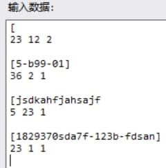

使用说明
简单上手
- 新项目
- 点击新建，新建一个项目
- 点击对应的浏览选择官方demo路径（在弹出的对话框中找到demo的exe文件，双击或选中后点击打开）
- 选择自己的程序路径，操作同上
PS: 点击设置可以更改对话框默认展示目录，更加方便 - 选择是否忽略空格、校对结果显示模式
- 点击创建/修改测试数据，进行数据添加：
本应用内测试数据简便输入（即中括号仅输左边）与常规输入，其余和正常格式一致（如下图）

若要测试的程序无输入，可以空置或输入一个'['，但一定要完成创建/修改测试数据操作（原因见细节） - 完成数据编辑后点击生成/修改并开始校对
- 若想查看生成文件，可点击打开项目目录，即可查看对应文件
- 现有项目
- 点击下拉框选择一个已有的项目
- 基本操作同新项目，若仅修改校对模式则可直接点击开始校对
细节
- 新建的文件夹命名是当前的年-月-日-时-分-秒，为避免重复，限制一秒仅能新建一次
- 点击新建后，会新建一个上述目录，且会包含以下文件：
- 用来存储两个exe路径和校对模式的文档（__path.log）
- 空的测试数据文档（__test_data.txt）
- 空的比对结果文档（_compare_result.txt）
- 空的demo测试结果文档（_demo_result.txt）
- 空的作业exe测试结果文档（_your_exe_result.txt）
点击创建/修改测试数据窗口的生成/修改并开始校对后，会进行如下操作：- 修改测试数据文档（__test_data.txt）
- 新建/修改测试批处理（test.bat）
- 关闭数据生成/修改窗口
- 根据选择好的路径及校对模式，修改__path.log
- 根据选择的校对模式修改测试批处理（test.bat）
- 在cmd中运行test.bat
- 将校对结果显示在文本框中
点击开始校对后，会进行如下操作：- 根据选择好的校对模式，修改__path.log
- 根据选择的校对模式修改测试批处理（test.bat）
- 在cmd中运行test.bat
- 将校对结果显示在文本框中
- 创建/修改数据时会对简写的数据自动编号（不超过256个）
- 测试数据组数自动生成会将首个'['到整行结束替换为对应合法序号
- 看起来多余的开始校对按钮是为了方便需要同一数据多次测试的情况，例如：
希望仅更改校对模式/程序内有输出运行时间/输出有不可预测值等
常规
- 您的测试数据中不能包含任何"["（其之后整行会被替换为测试数据编号）
- 您的测试数据中不应包含任何";" "//" 和 "#"（会被get_input_data.exe当做注释）
- 本应用生成的所有文件均在test_log目录下，要卸载本应用直接将程序所处的目录（默认为Debug_Tool）删除即可
- 本应用在Windows下运行，使用本应用可能需要安装.NET运行环境
- 不建议对rsc目录手动进行任何更改
- 若修改了某一项目exe的路径，需要再次完成创建/修改测试数据操作；
仅修改输出模式则无需进行此操作（原因参考细节部分）
不重要的小细节
- 下拉框中的项目是根据字符串降序排列的
- 如果嫌Debug_Tool不好听，你也可以这个目录重命名
- 本应用正常使用不会导致问题，下面的声明用来体现求生欲
声明
- 本应用无联网功能，且完全免费
- 对于用户使用本应用产生的任何后果，作者均不承担任何责任